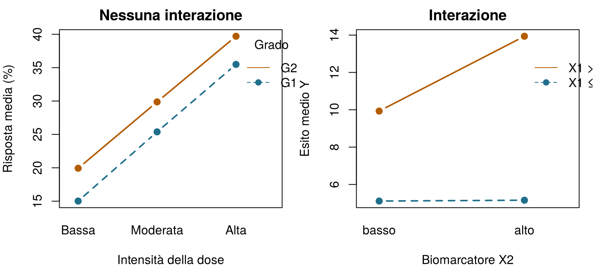
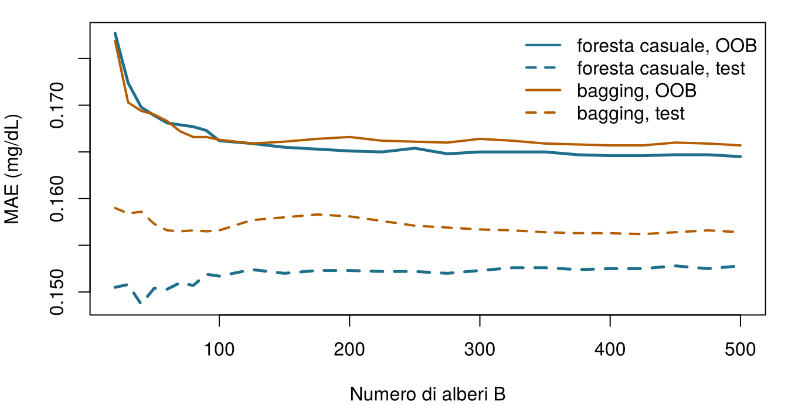
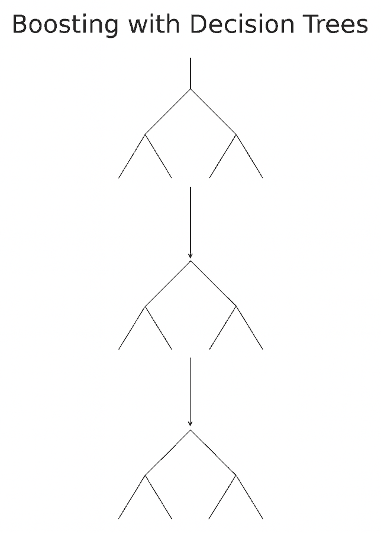
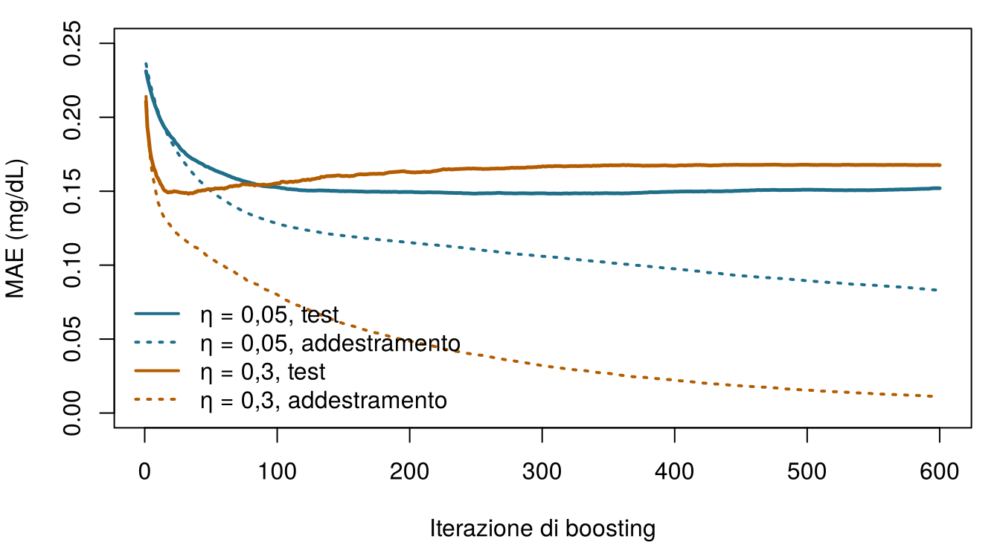

Sono le 7 del mattino nella terapia intensiva del Reparto 7. Seán, il farmacista di reparto, ha passato la notte a rivedere i dosaggi dei farmaci per i pazienti a rischio di danno renale acuto (AKI: un aumento della creatinina di almeno 0,3 mg/dL entro 48 ore (Kidney Disease: Improving Global Outcomes (KDIGO) Acute Kidney Injury Work Group 2012)). “I punteggi di rischio vanno benissimo,” dice alla dott.ssa Emma Walsh, l’intensivista, “ma alle 3 di notte mi serve qualcosa che posso seguire senza computer: qualche domanda, in ordine, che finisca con un rischio.” Emma sorride: è esattamente questo un albero decisionale.
A qualche corridoio di distanza, il gruppo dello studio ONCO-1 (lo studio randomizzato di chemioterapia contro nessuna chemioterapia del Capitolo 1) ha appena ricevuto la relazione di un consulente: un modello ad alberi con boosting che prevede quali pazienti rispondono alla chemioterapia con un’area sotto la curva ROC di 0,998. Quasi perfetto. Devono crederci? Questo capitolo costruisce gli strumenti che stanno dietro a entrambe le storie e si chiude con una lista di controllo per la seconda.
Ecco un piccolo albero appreso dai 1.000 pazienti di addestramento del Reparto 7. Parti dall’alto, rispondi a ogni domanda per il paziente e segui il ramo finché non arrivi a un riquadro con un rischio. Quale rischio di AKI assegna l’albero a ciascuno dei tre pazienti di stasera? Prova a indovinare: il capitolo spiega da dove viene l’albero.
Paziente
SOFA
Creatinina di base (mg/dL)
Rischio di AKI secondo l'albero
Aoife Byrne, 71 anni, sepsi
6
1,0
Tomás Ruiz, 54 anni
3
0,9
Priya Nair, 38 anni
12
1,5
Come usare questo capitolo
Inizi da qui?
Questo capitolo prende in prestito alcune idee dai capitoli precedenti. Una riga per ciascuna:
Insiemi di addestramento e di test. Un modello viene stimato sui dati di addestramento e valutato su un insieme di test che non ha mai visto (Sezione 1.8). Questo capitolo usa le suddivisioni condivise del libro, introdotte nel Capitolo 3 e salvate in data/splits/: 1.000 pazienti di addestramento e 250 di test per il Reparto 7, 800 e 200 per ONCO-1, con i pazienti di addestramento ripartiti in cinque blocchi fissi di validazione incrociata. Tutti i modelli della Parte II vengono valutati sugli stessi pazienti.
Sovradattamento e validazione incrociata. Un modello flessibile può memorizzare il rumore; la validazione incrociata a \(V\) blocchi stima la prestazione su dati nuovi mentre si fanno le scelte (Definizione 1.8, Definizione 1.9). Un iperparametro è un’impostazione che controlla come un modello viene appreso, anziché essere appresa essa stessa (Capitolo 3).
Metriche di errore. L’errore assoluto medio (MAE) e la radice dell’errore quadratico medio (RMSE) misurano quanto le previsioni numeriche si discostano dal vero (Capitolo 3).
La regressione lineare e quella logistica prevedono con una somma pesata delle variabili (Capitolo 4, Capitolo 5); l’area sotto la curva ROC (AUC) è la probabilità che un paziente scelto a caso con l’evento riceva un punteggio più alto di uno senza (Capitolo 5).
La fuga di informazioni (leakage) è la presenza, nelle variabili, di informazioni che onestamente non sarebbero disponibili al momento della previsione (Capitolo 3). L’entropia misura la sorpresa (Capitolo 2).
Esempio
Chi o che cosa
Esito
Volti che incontrerai
1Terapia intensiva del Reparto 7
1.250 pazienti di terapia intensiva in 4 ospedali
variazione della creatinina in 48 h (danno renale acuto se ≥ 0,3 mg/dL)
Aoife (71 anni, sepsi, rischio borderline), Tomás (54 anni, rischio basso), Priya (38 anni, rischio alto); la dott.ssa Emma Walsh; Seán, il farmacista
2Studio ONCO-1
1.000 pazienti randomizzati a ricevere o meno la chemioterapia
riduzione del tumore (%)
i pazienti #0042 e #0917
3HomeBeat
500 persone che indossano uno smartwatch a casa
punteggio di stress, evento di peggioramento
Lena
4CellWorks
420 lotti di produzione di una terapia cellulare
punteggio di potenza
il lotto CW-118
Tutti e quattro i dataset sono simulati e si possono scaricare dall’appendice sui dati. La presentazione completa si trova in Sezione 1.1.
Questo capitolo parla di modelli fatti di domande. Comprende quattordici sezioni e un Laboratorio, sette verifiche rapide, tre widget “Prova tu” (far crescere un albero, estrarre campioni bootstrap, seguire il boosting passo dopo passo), una sfida e tre missioni di programmazione in R e Python. Calcola circa due ore. Le foreste con centinaia di alberi e i modelli XGBoost vengono addestrati una volta sola, fuori dal browser, e qui ne carichiamo i risultati; tutto il resto gira dal vivo.
La notazione in sintesi (solo per consultazione)
Simbolo
Significato
Sezione
\(R_1, \dots, R_{\lvert T\rvert}\)
le regioni (foglie) di un albero \(T\); \(\lvert T\rvert\) è il numero di foglie
Prima di lasciare un albero libero sui dati clinici, è utile vederlo ritrovare regole che già conosciamo. Simuliamo 200 istanze con due variabili, \(X_1\) (pensa a qualcosa come l’età, tra 0 e 10) e \(X_2\) (pensa a un biomarcatore, centrato sullo zero), e un esito \(Y\) prodotto da regole se–allora più un po’ di rumore:
Leggi l’output dall’alto. Il nodo 1 è la radice: tutte le 200 istanze, con media 8,89. La prima domanda è “\(X_1 < 4{,}04\)?”. Chi risponde sì (92 istanze) finisce in un riquadro finale, una foglia, che prevede 5,13. Agli altri viene posta una seconda domanda, “\(X_2 < 0{,}01\)?”, che li manda a foglie che prevedono 9,93 o 13,94. L’albero ha riscoperto quasi esattamente le tre regole di Equazione 6.1, con soglie di circa 4 e 0, partendo soltanto dai dati. Ogni percorso dalla radice a una foglia è una regola (Breiman et al. 1984; Hastie, Tibshirani, e Friedman 2009, cap. 9):
Figura 6.1: L’albero giocattolo visto dall’alto. Ogni punto è un’istanza, colorata in base al suo esito; l’albero taglia il piano in tre rettangoli e prevede una costante (riportata) in ciascuno.
Questo è ciò che un albero di regressione fa con qualsiasi dataset: taglia lo spazio delle variabili in rettangoli e prevede una costante in ciascuno. Il resto del capitolo spiega come sceglie dove tagliare, fino a che profondità spingersi e perché, in pratica, raramente ci fidiamo di un albero solo.
6.2 L’anatomia di un albero
Il vocabolario viene dalla botanica, capovolta: la radice sta in alto e le foglie in basso. La Figura 6.2 mostra lo stesso esempio giocattolo annotato a mano.
Figura 6.2: L’anatomia di un albero decisionale, annotata su un’esecuzione precedente della simulazione giocattolo (per questo i numeri differiscono leggermente da quelli sopra). Ogni riquadro mostra il valore previsto, il numero di istanze e la loro percentuale sul campione.
Definizione 6.1 (Albero decisionale) Un albero decisionale prevede un esito ponendo una sequenza di domande sì/no sulle variabili, ciascuna della forma “\(x_j \le s\)?” per una variabile \(j\) e una soglia \(s\) (oppure “\(x_j\) appartiene a questo gruppo di categorie?”). Le sue parti sono:
il nodo radice, che contiene tutte le istanze di addestramento;
i nodi interni, ciascuno con una suddivisione (la domanda) che manda le istanze ai suoi due nodi figli;
le foglie (nodi terminali), che producono la previsione: l’esito medio delle istanze di addestramento che vi arrivano, in un albero di regressione, oppure le proporzioni delle classi, in un albero di classificazione.
La profondità di un albero è il numero di domande nel suo percorso più lungo dalla radice a una foglia.
Ogni nodo porta con sé anche un’informazione interna al nodo (la sua previsione, il numero di istanze e la loro quota sul campione) che riassume il sottogruppo creato dalle domande precedenti, mentre le suddivisioni portano la logica tra i nodi che smista ogni istanza. Un figlio diventa un nodo interno, se vale la pena suddividerlo ancora, oppure una foglia.
Si leggono come un ragionamento clinico. Ogni previsione si può ricostruire lungo un percorso di domande, che si può confrontare con le conoscenze cliniche e scrivere sul cartoncino di Seán.
Sono locali. A differenza di un modello lineare, che presuppone un’unica relazione per tutti, ogni ramo può comportarsi in modo diverso. Soglie, plateau e cambiamenti bruschi vengono naturali.
Trovano le interazioni da soli (vedi sotto).
Non si curano della scala. Una suddivisione dipende solo dall’ordine dei valori, quindi il lattato in mmol/L o in mg/dL produce lo stesso albero e non serve standardizzare le variabili. Le variabili categoriali sono gestite direttamente, e alcune implementazioni smistano le istanze con valori mancanti tramite suddivisioni surrogate.
Le loro debolezze sono altrettanto reali. Le previsioni saltano da una costante all’altra a ogni soglia; e, come vedremo in Sezione 6.6, un piccolo cambiamento nei dati può produrre un albero molto diverso.
6.2.1 Una brevissima introduzione alle interazioni
Due variabili interagiscono quando l’effetto dell’una sull’esito dipende dal valore dell’altra. In un modello lineare un’interazione va scritta a mano, come un termine prodotto del tipo \(\beta_3 x_1 x_2\) (Capitolo 4). In un albero compare da sola: una suddivisione su \(X_2\) che si trova sotto una suddivisione su \(X_1\) si applica solo alle istanze da quel lato di \(X_1\). Nell’esempio giocattolo, \(X_2\) conta solo quando \(X_1 > 4\). Gli esempi clinici sono ovunque: un farmaco che funziona bene nei pazienti più giovani e meno bene in quelli più anziani, a causa del modo in cui lo metabolizzano; un gene la cui espressione predice la risposta solo nei tumori di alto grado; una curva dose–risposta ripida nei pazienti con un buon performance status e piatta in quelli fragili; e, in genetica, l’interazione tra genotipo e ambiente che plasma un fenotipo.
Un grafico di interazione mostra l’esito medio per ogni combinazione di due variabili. Linee parallele indicano assenza di interazione; linee che divergono o si incrociano indicano un’interazione (Figura 6.3).

Figura 6.3: A sinistra: risposta tumorale simulata senza interazione: l’effetto della dose è lo stesso nei due gradi tumorali, quindi le linee sono parallele. A destra: i dati giocattolo: l’effetto del biomarcatore X2 è nullo quando X1 ≤ 4 e grande quando X1 > 4, quindi le linee divergono.
In ONCO-1 c’è un’interazione incorporata dello stesso tipo: l’intensità della dose può contare solo per i pazienti randomizzati alla chemioterapia, perché nel braccio di controllo tutti hanno dose zero. Un albero lo scopre suddividendo prima sul trattamento e poi sulla dose solo all’interno del ramo della chemioterapia.
Aoife (71 anni, sepsi; ricoverata nel Reparto 7) arriva a una foglia di un albero di regressione per la variazione della creatinina che contiene 464 pazienti di addestramento. Che cosa prevede l’albero per lei?
6.3 Come impara un albero: impurità e suddivisioni
Un albero di regressione è una funzione costante a tratti. Se le sue foglie sono le regioni \(R_1, \dots, R_{\lvert T\rvert}\) dello spazio delle variabili, prevede
dove \(\mathbf{1}\{\cdot\}\) vale 1 quando la condizione è vera e 0 altrimenti, e \(\bar y_{R_m}\) è l’esito medio delle istanze di addestramento nella regione \(R_m\). Visto così, un albero è un modello lineare in un insieme di variabili indicatrici sì/no, ma indicatrici apprese dai dati invece che scelte dall’analista. Dove un modello lineare inclina un piano, un albero costruisce una scala.
Trovare il miglior insieme possibile di rettangoli è computazionalmente impraticabile, quindi gli alberi vengono fatti crescere in modo greedy (avido), una suddivisione alla volta, con l’algoritmo CART (classification and regression trees, alberi di classificazione e regressione) (Breiman et al. 1984). In un nodo che contiene le istanze \(S\), CART prova ogni variabile \(j\) e ogni soglia \(s\), manda le istanze con \(x_j \le s\) a un figlio sinistro \(S_L\) e le altre a un figlio destro \(S_R\), e tiene la suddivisione che rende i figli il più omogenei possibile.
Definizione 6.2 (Impurità e riduzione di impurità) L’impurità\(I(S)\) di un nodo misura quanto sono mescolati gli esiti delle sue istanze; è zero quando sono tutti uguali. Per un esito numerico è la varianza all’interno del nodo, \[
I(S) = \frac{1}{\lvert S\rvert}\sum_{i \in S} \left(y_i - \bar y_S\right)^2 .
\] Per un esito categoriale con proporzioni di classe \(\hat p_1, \dots, \hat p_G\) nel nodo, è l’indice di Gini oppure l’entropia, \[
I_{\text{Gini}}(S) = 1 - \sum_{g=1}^{G} \hat p_g^{\,2}, \qquad
I_{\text{ent}}(S) = -\sum_{g=1}^{G} \hat p_g \log_2 \hat p_g .
\] Una suddivisione di \(S\) in \(S_L\) e \(S_R\) riceve come punteggio la sua riduzione di impurità\[
\Delta I = I(S) - \frac{\lvert S_L\rvert}{\lvert S\rvert} I(S_L) - \frac{\lvert S_R\rvert}{\lvert S\rvert} I(S_R),
\] e CART sceglie la suddivisione con il \(\Delta I\) più grande.
Per un esito numerico, massimizzare \(\Delta I\) equivale a minimizzare l’errore quadratico totale dei due figli,
L’entropia è la stessa quantità che misurava la sorpresa nel Capitolo 2(Shannon 1948): un nodo in cui tutti i pazienti hanno un AKI non riserva alcuna sorpresa, mentre un nodo 50/50 ne contiene un bit intero. Quando l’impurità si misura con l’entropia, \(\Delta I\) si chiama guadagno di informazione(Quinlan 1986).
Una suddivisione a mano. Un nodo contiene 100 pazienti del Reparto 7, 60 con AKI e 40 senza. Il suo indice di Gini è \(1 - (0.6^2 + 0.4^2) = 0.48\). La suddivisione A manda 50 pazienti a sinistra (45 con AKI) e 50 a destra (15 con AKI). Il figlio sinistro ha Gini \(1 - (0.9^2 + 0.1^2) = 0.18\), quello destro \(1 - (0.3^2 + 0.7^2) = 0.42\), quindi
La suddivisione B manda 90 pazienti a sinistra (55 con AKI, Gini circa 0,475) e 10 a destra (5 con AKI, Gini 0,5): \(\Delta I_B \approx 0.48 - 0.9 \times 0.475 - 0.1 \times 0.5 \approx 0.002\). La suddivisione A separa i pazienti molto meglio, ed è quella che CART tiene.
Quale di questi nodi ha l’impurità di Gini più bassa?
6.3.1 Come si presenta la ricerca in pratica
Per una variabile continua come il SOFA o l’espressione di un gene, le soglie candidate sono i punti medi tra valori distinti consecutivi; per ciascuna l’algoritmo calcola \(\Delta I\) e tiene la migliore. Poiché conta solo l’ordine, non serve riscalare. Per una variabile categoriale con \(m\) livelli ci sono \(2^{m-1} - 1\) modi di dividere i livelli in due gruppi; rpart, l’implementazione di CART in R usata in questo libro (Therneau e Atkinson 2023), evita di provarli tutti ordinando i livelli in base all’esito medio (o alla composizione delle classi) e provando solo le suddivisioni lungo quell’ordine. Così può scoprire, per esempio, che i gradi tumorali G2 e G3 si comportano in modo simile e separarli da G1. Un fattore ordinato viene trattato come un numero. Quando la variabile usata in un nodo manca per un’istanza, rpart può comunque smistarla usando suddivisioni surrogate: altre variabili che imitano la suddivisione principale, il che torna utile con tabelle cliniche che hanno qualche lacuna occasionale (ai dati mancanti è dedicato un capitolo a parte, il Capitolo 9).
Fai crescere un albero sul Reparto 7. L’albero qui sotto prevede la variazione della creatinina in 48 ore a partire da due variabili a tua scelta, usando i 1.000 pazienti di addestramento. Ogni rettangolo colorato è una foglia; il suo colore è la previsione della foglia. Aumenta la profondità massima un passo alla volta e osserva due cose: come si moltiplicano i rettangoli e che cosa succede all’errore sui 250 pazienti di test. Obiettivo: trovare la profondità a cui l’errore di test è minimo.
icuRaw =FileAttachment("data/icu_aki.csv").csv({typed:true})w7split =FileAttachment("data/splits/ward7_split.csv").csv({typed:true})// associa a ogni paziente l'etichetta addestramento/test della suddivisione condivisa (Capitolo 3)icuT = icuRaw.map((d, i) => ({...d,set: w7split[i].set}))gtChoices =newMap([["Punteggio SOFA","sofa"], ["Creatinina di base (mg/dL)","baseline_creat"], ["Lattato (mmol/L)","lactate"], ["Pressione arteriosa media minima (mmHg)","map_min"], ["Albumina (g/dL)","albumin"], ["PCR (mg/L)","crp"], ["Età (anni)","age"]])viewof gtX = Inputs.select(gtChoices, {value:"sofa",label:"Asse orizzontale"})viewof gtY = Inputs.select(gtChoices, {value:"baseline_creat",label:"Asse verticale"})viewof gtDepth = Inputs.range([0,8], {value:1,step:1,label:"Profondità massima"})
gt = {const fx = gtX, fy = gtY === gtX ? (gtX ==="sofa"?"baseline_creat":"sofa") : gtY;const rows = icuT.map(d => ({x: d[fx],y: d[fy],t: d.delta_creatinine_48h,set: d.set}));const train = rows.filter(d => d.set==="train"), test = rows.filter(d => d.set==="test");const minLeaf =10, maxD =8;functiongrow(idx, depth, box) {const n = idx.length;let tot =0, totss =0;for (const i of idx) { tot += train[i].t; totss += train[i].t**2; }const node = {n,mean: tot / n, depth, box};if (depth >= maxD || n <2* minLeaf) return node;let best =null;for (const f of ["x","y"]) {const s = idx.slice().sort((a, b) => train[a][f] - train[b][f]);let ls =0, lss =0;for (let k =0; k < n -1; k++) {const v = train[s[k]].t; ls += v; lss += v * v;const nl = k +1, nr = n - nl;if (nl < minLeaf || nr < minLeaf) continue;const a = train[s[k]][f], b = train[s[k +1]][f];if (a === b) continue;const sse = (lss - ls * ls / nl) + ((totss - lss) - (tot - ls) **2/ nr);if (!best || sse < best.sse) best = {sse, f,thr: (a + b) /2, k, s}; } }if (!best) return node; node.f= best.f; node.thr= best.thr;const bl = {...box}, br = {...box};if (best.f==="x") { bl.x2= best.thr; br.x1= best.thr; } else { bl.y2= best.thr; br.y1= best.thr; } node.left=grow(best.s.slice(0, best.k+1), depth +1, bl); node.right=grow(best.s.slice(best.k+1), depth +1, br);return node; }const [x1, x2] = d3.extent(rows, d => d.x), [y1, y2] = d3.extent(rows, d => d.y);constroot=grow(d3.range(train.length),0, {x1, x2, y1, y2});const predict = (node, p, D) => (node.f&& node.depth< D) ?predict(p[node.f] <= node.thr? node.left: node.right, p, D) : node.mean;const leaves = (node, D) => (node.f&& node.depth< D) ? [...leaves(node.left, D),...leaves(node.right, D)] : [node];const curve = d3.range(0, maxD +1).flatMap(D => [ {D,set:"addestramento",mae: d3.mean(train, p =>Math.abs(p.t-predict(root, p, D)))}, {D,set:"test",mae: d3.mean(test, p =>Math.abs(p.t-predict(root, p, D)))}]);const testc = curve.filter(c => c.set==="test");const bestD = testc.reduce((a, c) => c.mae< a.mae? c : a).D;const label = k => [...gtChoices].find(e => e[1] === k)[0];return {root, train, leaves, curve, bestD, fx, fy,lx:label(fx),ly:label(fy)};}
{const tr = gt.curve.find(c => c.D=== gtDepth && c.set==="addestramento").mae;const te = gt.curve.find(c => c.D=== gtDepth && c.set==="test").mae;const nl = gt.leaves(gt.root, gtDepth).length;const hit = gtDepth === gt.bestD&& gt.bestD>0;if (hit &&window.aihs) window.aihs.complete("ch06-tryit-grow");returnhtml`<p>Profondità ${gtDepth}: <strong>${nl}</strong> foglie · MAE di addestramento <strong>${tr.toFixed(3)}</strong> · MAE di test <strong>${te.toFixed(3)}</strong> mg/dL${hit ?" ✓ Questa è la profondità con l'errore di test più basso per queste due variabili.":""}</p>`;}
{const lv = gt.leaves(gt.root, gtDepth);const jit = (i) => (((i *7919) %101) /101-0.5);const isInt = gt.train.every(d =>Number.isInteger(d.x));return Plot.plot({height:330,marginLeft:50,x: {label: gt.lx},y: {label: gt.ly},color: {type:"linear",scheme:"YlOrRd",domain: [0,0.9],legend:true,label:"Variazione prevista della creatinina (mg/dL)"},marks: [ Plot.rect(lv, {x1: d => d.box.x1,x2: d => d.box.x2,y1: d => d.box.y1,y2: d => d.box.y2,fill:"mean",fillOpacity:0.75,stroke:"currentColor",strokeWidth:0.6}), Plot.dot(gt.train, {x: (d, i) => d.x+ (isInt ?jit(i) *0.6:0),y:"y",r:1.4,fill:"currentColor",fillOpacity:0.35}), lv.length<=8? Plot.text(lv, {x: d => (d.box.x1+ d.box.x2) /2,y: d => (d.box.y1+ d.box.y2) /2,text: d => d.mean.toFixed(2),fontWeight:"bold",fontSize:12}) :null ] });}
L’errore di addestramento scende a ogni livello di profondità in più: un albero più profondo si adatta sempre meglio ai propri dati di addestramento. L’errore di test scende all’inizio e poi smette di migliorare o risale: le foglie profonde contengono ciascuna una manciata di pazienti, e le loro medie inseguono il rumore. Questo è il sovradattamento (Definizione 1.8), visto con gli occhi di un albero. Prova SOFA con creatinina di base, poi età con PCR: le variabili deboli producono rettangoli dall’aspetto movimentato che prevedono poco.
6.4 CART in pratica: crescita, arresto e potatura
Lasciata a sé stessa, la suddivisione greedy continua finché ogni foglia non diventa minuscola. Due tipi di controllo lo impediscono.
Le regole di arresto fermano la crescita in anticipo. In rpart sono iperparametri: minsplit (il nodo più piccolo che può essere suddiviso, 20 per impostazione predefinita), minbucket (la foglia più piccola consentita, per impostazione predefinita un terzo di minsplit), maxdepth (la profondità massima) e cp, il parametro di complessità: una suddivisione viene mantenuta solo se migliora l’adattamento complessivo almeno della frazione cp. Per la classificazione, parms = list(split = "gini") (il valore predefinito) oppure "information" (entropia) sceglie l’impurità.
La potatura lavora nella direzione opposta: prima si fa crescere un albero grande, poi si tagliano i rami che non si guadagnano il posto. Fermarsi presto può far perdere una suddivisione debole che avrebbe reso possibile, più in basso, una suddivisione molto buona; la potatura non ha questo punto cieco.
Definizione 6.3 (Potatura costo-complessità) Per un albero \(T\) con \(\lvert T\rvert\) foglie e somma dei quadrati dei residui \(\text{RSS}(T)\) sui dati di addestramento, la potatura costo-complessità minimizza \[
\text{RSS}(T) + c_p\, \lvert T\rvert ,
\] dove il parametro di complessità \(c_p \ge 0\) fa pagare un prezzo per ogni foglia (Breiman et al. 1984). Man mano che \(c_p\) cresce a partire da zero, il miglior sottoalbero perde i rami uno alla volta, dando una sequenza di alberi annidati che va dall’albero completo fino alla sola radice. Il valore di \(c_p\) si sceglie con la validazione incrociata. La regola 1-SE (di un errore standard) sceglie l’albero più semplice il cui errore di validazione incrociata è entro un errore standard dal minimo.
(rpart scala \(c_p\) rispetto all’errore del nodo radice; l’idea è la stessa. In altri libri il parametro di complessità si chiama \(\alpha\); noi riserviamo \(\alpha\) al parametro di miscelazione dell’elastic net del Capitolo 4.) La potatura costo-complessità è la versione per alberi delle penalità di ridge e lasso: una misura di adattamento più un prezzo per la complessità.
Ecco l’intera procedura sul Reparto 7: far crescere un grande albero di regressione sui pazienti di addestramento, guardare l’errore di validazione incrociata di ogni sottoalbero e potare.
# xval = folds: la validazione incrociata di rpart usa i cinque blocchi condivisi, quindi non serve un semebig <-rpart(delta_creatinine_48h ~ site + age + sofa + lactate + map_min + baseline_creat + protocol_adherence + bun + crp + albumin,data = train, control =rpart.control(cp =0.001, minsplit =20, xval = folds))cpt <- big$cptable # una riga per sottoalberobest <-which.min(cpt[, "xerror"]) # errore di validazione incrociata minimocp_min <- cpt[best, "CP"]cp_1se <- cpt[cpt[, "xerror"] <= cpt[best, "xerror"] + cpt[best, "xstd"], "CP"][1]tree_min <-prune(big, cp = cp_min)tree_1se <-prune(big, cp = cp_1se)tree_1se
Figura 6.4: Errore di validazione incrociata (relativo al nodo radice) dei sottoalberi del grande albero del Reparto 7, per numero di foglie. Le barre indicano ± un errore standard; la linea tratteggiata è il minimo più un errore standard. La regola 1-SE sceglie l’albero più piccolo sotto la linea.
Il grande albero ha 81 foglie. Il sottoalbero con l’errore di validazione incrociata più basso ne ha 6 e l’albero 1-SE 6 (con i blocchi condivisi le due regole coincidono) e l’albero potato suddivide solo su SOFA e creatinina di base. Questi due alberi sono quelli che confrontiamo con tutti gli altri modelli del libro: il grande albero (rpart, \(c_p = 0.001\), senza potatura) e l’albero 1-SE (il grande albero potato con la regola 1-SE). Sui 250 pazienti di test l’errore assoluto medio è 0,195 mg/dL per il grande albero e 0,186 per l’albero 1-SE, contro 0,236 se si prevede per tutti la media di addestramento. La potatura ha eliminato gran parte dell’albero e lo ha reso più accurato: le foglie in più del grande albero stavano adattando il rumore. Il piccolo albero sta anche sul cartoncino di Seán. Quando semplicità e accuratezza tirano in direzioni diverse, quale privilegiare non è una questione statistica: dipende da come verrà usato l’albero, un tema su cui torniamo alla fine del capitolo.
Le fasi di costruzione di un albero, e l’elemento di rpart che controlla ciascuna, sono riassunte in Tabella 6.1.
Tabella 6.1: Le fasi di costruzione di un albero con rpart.
Fase
Che cosa succede
In rpart
Inizializzazione
la radice contiene tutte le istanze di addestramento; la sua previsione è la media (o la classe più frequente)
automatica
Crescita
cercare, tra tutte le variabili e le soglie, la suddivisione con la massima riduzione di impurità
method = "anova" o "class", parms
Suddivisione
sostituire il nodo con due figli e ripetere all’interno di ciascuno
ricorsiva
Arresto
fermarsi quando i nodi sono troppo piccoli, troppo profondi o il guadagno è troppo piccolo
minsplit, minbucket, maxdepth, cp
Potatura
tagliare fino al sottoalbero scelto con la validazione incrociata
printcp(), prune(), xval
Previsione
far scendere una nuova istanza lungo le domande fino a una foglia
predict()
Dopo aver fatto crescere un grande albero, perché scegliere il sottoalbero dato dalla regola 1-SE anziché quello con l’errore di validazione incrociata più basso?
Il tuo primo albero sul Reparto 7. È stato fatto crescere un albero di profondità 3 sui pazienti di addestramento. L’ultima riga deve misurare il suo errore assoluto medio sui pazienti di test. Riempi lo spazio vuoto con il dataset per cui vanno fatte le previsioni.
rpart e scikit-learn (Pedregosa et al. 2011) usano la stessa idea di CART ma impostazioni predefinite diverse (per esempio, rpart non crea foglie con meno di 7 pazienti, a meno che non gli venga detto diversamente), quindi i due alberi e i loro errori differiscono leggermente. Sono corretti entrambi.
6.5 Alberi per la classificazione
Tutto quello che abbiamo visto finora vale anche per un esito categoriale. Un albero di classificazione sceglie le suddivisioni in base al Gini o all’entropia invece che alla varianza, e ogni foglia memorizza la proporzione di ciascuna classe tra le sue istanze di addestramento (Breiman et al. 1984; James et al. 2021, cap. 8). Quella proporzione è la probabilità prevista; una previsione di classe si ottiene da una soglia che, come ha mostrato il Capitolo 5, è una decisione sui costi più che una proprietà del modello.
L’albero della prova d’ingresso è stato fatto crescere esattamente così, sul Reparto 7, con l’AKI (sì/no) come esito e una profondità massima di 2:
La colonna yprob riporta, per ogni nodo, la proporzione di pazienti senza e con AKI (“no AKI” e “AKI”). SOFA inferiore a 8,5 significa SOFA pari a 8 o meno, ed è per questo che la prova d’ingresso chiedeva “SOFA ≥ 9?”. Leggi la foglia di Aoife: un rischio di circa uno su tre, sopra la soglia di 0,25 fissata dalla sua équipe nel Capitolo 1 (Sezione 1.5), quindi l’albero sostiene l’avvio del bundle nefroprotettivo. Nota che Aoife e Tomás ricevono esattamente lo stesso rischio, anche se Tomás è più giovane, meno grave e ha una pressione arteriosa migliore: un albero a due domande non riesce a distinguerli. La grossolanità è il prezzo di una regola che sta su un cartoncino.
L’albero della prova d’ingresso è un albero didattico: la sua profondità è stata fissata a 2. L’albero che entra nel confronto sull’AKI del libro è costruito in modo onesto, con i cinque predittori del modello logistico principale del Capitolo 5 (SOFA, lattato, pressione arteriosa minima, creatinina di base e aderenza al protocollo) e potato con la regola 1-SE sui blocchi condivisi. Conserva 4 foglie e dà ai tre pazienti di stasera gli stessi rischi (0,34, 0,34 e 0,84). Sui 250 pazienti di test la sua AUC è 0,733, contro 0,855 di quella regressione logistica, che dà ad Aoife 0,49 e a Tomás 0,07. Una manciata di foglie non può ordinare i pazienti con la stessa finezza di una somma pesata di cinque variabili.
6.6 Perché un albero solo non basta
Gli alberi sono instabili: piccoli cambiamenti nei dati di addestramento possono modificare la prima suddivisione, e con essa tutto ciò che sta sotto. Per vederlo, estrai cinque nuovi insiemi di addestramento ricampionando con reinserimento i 1.000 pazienti del Reparto 7 (tra poco daremo un nome a questa procedura) e fai crescere su ciascuno un albero di profondità 2.
Tabella 6.2: Prima e seconda suddivisione di alberi di profondità 2 cresciuti su cinque versioni ricampionate dell’insieme di addestramento del Reparto 7.
Campione
Prima suddivisione (radice)
Seconda suddivisione, ramo sinistro
Seconda suddivisione, ramo destro
1
sofa< 8.5
sofa< 4.5
sofa< 12.5
2
sofa< 8.5
baseline_creat< 1.265
sofa< 11.5
3
sofa< 8.5
sofa< 5.5
baseline_creat< 1.335
4
sofa< 7.5
baseline_creat< 1.165
sofa< 11.5
5
sofa< 7.5
sofa< 3.5
baseline_creat< 1.095
Il SOFA domina ogni volta, come è giusto che sia (in questi dati è il predittore più forte del danno renale), ma la soglia si sposta, e la seconda domanda a sinistra cambia da un campione all’altro. Immagina cinque ospedali che stampano ciascuno il “proprio” cartoncino. Con più profondità e segnali più deboli, come accade con migliaia di geni, il disaccordo diventa molto più grande. Un singolo albero profondo ha bassa distorsione e alta varianza. Il resto del capitolo spiega come rimediare combinando molti alberi.
6.7 Ensemble, bootstrap e bagging
Un ensemble combina in una sola le previsioni di molti modelli. L’intuizione è la stessa che spinge a chiedere il parere di diversi colleghi: se i loro errori non sono tutti uguali, in parte si compensano. Nella pratica dominano tre famiglie:
il bagging (e il suo perfezionamento, le foreste casuali) addestra i modelli in parallelo su dati ricampionati e ne fa la media, soprattutto per ridurre la varianza;
il boosting addestra i modelli in sequenza, ciascuno a correggere gli errori dell’ensemble costruito fino a quel momento, soprattutto per ridurre la distorsione;
lo stacking impara a combinare tipi diversi di modelli.
Gli alberi sono membri ideali di un ensemble proprio perché sono instabili: molti alberi leggermente diversi hanno parecchi errori da far sparire nella media.
Definizione 6.4 (Campione bootstrap) Un campione bootstrap di un dataset con \(n\) istanze è un nuovo dataset di \(n\) istanze estratte a caso da esso con reinserimento: alcune istanze compaiono due o più volte, altre nessuna (Efron 1979). Ripetere l’estrazione molte volte imita l’estrazione di nuovi dataset dalla popolazione, usando solo i dati a disposizione.
Quanti pazienti lascia fuori un campione bootstrap? Ogni estrazione manca un dato paziente con probabilità \(1 - 1/n\), quindi tutte le \(n\) estrazioni lo mancano con probabilità \((1 - 1/n)^n\). Per \(n = 1\,000\) questo vale \(0.3677\) e, al crescere di \(n\), si avvicina a \(1/e \approx 0.368\): circa il 37 % dei pazienti resta fuori da ogni campione bootstrap, e circa il 63 % compare almeno una volta.
Estrai campioni bootstrap. Trenta pazienti, numerati da 1 a 30. Ogni clic estrae un campione bootstrap: 30 estrazioni con reinserimento. Il numero in ogni cerchio indica quante volte quel paziente è stato estratto; i cerchi sbiaditi e tratteggiati sono i pazienti rimasti fuori (out of bag, “fuori dal sacchetto”). Estrai almeno cinque campioni e osserva la proporzione media di esclusi.
viewof bsDraw = Inputs.button("Estrai un campione bootstrap")
bs = {functionmulberry32(a) { returnfunction() { a |=0; a = a +0x6D2B79F5|0;let t =Math.imul(a ^ a >>>15,1| a); t = t +Math.imul(t ^ t >>>7,61| t) ^ t;return ((t ^ t >>>14) >>>0) /4294967296; }; }const n =30;const draws = d3.range(bsDraw).map(k => {const r =mulberry32(1000+ k), c =newArray(n).fill(0);for (let i =0; i < n; i++) c[Math.floor(r() * n)]++;return c; });return {n, draws};}
{const n = bs.n, last = bs.draws.length? bs.draws[bs.draws.length-1] :newArray(n).fill(null);const W =640, cols =10, cell =60, H =3* cell +10;const svg = d3.create("svg").attr("viewBox",`0 0 ${W}${H}`).attr("class","aihs-svg").attr("role","img").attr("aria-label","Trenta cerchi, uno per paziente, che mostrano quante volte ciascuno è stato estratto nell'ultimo campione bootstrap."); last.forEach((c, i) => {const g = svg.append("g").attr("transform",`translate(${20+ (i % cols) * cell + cell /2},${10+Math.floor(i / cols) * cell + cell /2})`); g.append("circle").attr("r",22).attr("class", c ===0?"box":"box-accent").style("stroke-dasharray", c ===0?"4 3":null).style("opacity", c ===0?0.45:1); g.append("text").attr("text-anchor","middle").attr("dy","-0.1em").attr("font-size",15).attr("font-weight",700).text(c ===null?"": (c ===0?"–":"×"+ c)); g.append("text").attr("text-anchor","middle").attr("dy","1.5em").attr("font-size",10).attr("class","muted").text("#"+ (i +1)); });return svg.node();}
{const k = bs.draws.length;if (k ===0) returnhtml`<p>Fai clic sul pulsante per estrarre il tuo primo campione bootstrap.</p>`;const oob = bs.draws.map(c => c.filter(v => v ===0).length/ bs.n);const last = oob[k -1], avg = d3.mean(oob);if (k >=5&&window.aihs) window.aihs.complete("ch06-tryit-bootstrap");returnhtml`<p>Campione ${k}: <strong>${Math.round(last * bs.n)}</strong> pazienti su ${bs.n} fuori dal sacchetto (${(100* last).toFixed(0)} %). Media sui tuoi ${k} campioni: <strong>${(100* avg).toFixed(1)} %</strong>. Teoria: (1 − 1/30)<sup>30</sup> = ${(100*Math.pow(1-1/30,30)).toFixed(1)} %, e 1/e ≈ 36,8 % per campioni grandi.${k >=5?"✓":""}</p>`;}
Definizione 6.5 (Bagging) Il bagging (bootstrap aggregating, aggregazione bootstrap) estrae \(B\) campioni bootstrap dai dati di addestramento, stima un modello \(\hat f_b\) su ciascuno e fa la media delle loro previsioni (Breiman 1996a): \[
\hat f_{\text{bag}}(\mathbf{x}) = \frac{1}{B} \sum_{b=1}^{B} \hat f_b(\mathbf{x}).
\] Nella classificazione gli alberi votano, oppure si fa la media delle probabilità previste.
Figura 6.5: Bagging con alberi decisionali: ogni albero cresce sul proprio campione bootstrap dei dati di addestramento, e le loro previsioni vengono aggregate.
La ricetta ha cinque passi: (1) scegliere il numero di alberi \(B\), per esempio 500; (2) estrarre un campione bootstrap dei pazienti di addestramento per ogni albero; (3) far crescere su ogni campione un albero profondo, non potato; (4) far fare a ogni albero una previsione per un nuovo paziente; (5) fare la media delle previsioni (o contare i voti). Ogni albero reagisce in modo eccessivo alle stranezze del proprio campione (qualche paziente insolito estratto tre volte, altri assenti), ma le stranezze cambiano da un albero all’altro e nella media si compensano in gran parte. La media di \(B\) previsioni che hanno ciascuna varianza \(\sigma^2\) e correlazione a due a due \(\rho\) ha varianza \(\rho\sigma^2 + (1 - \rho)\sigma^2 / B\)(Hastie, Tibshirani, e Friedman 2009, ch. 15): più alberi riducono il secondo termine, ma il primo resta. Alberi correlati non diventano certezza a forza di fare la media. Tieni a mente questa formula; le foreste casuali attaccano \(\rho\).
Definizione 6.6 (Errore out-of-bag (OOB)) Ogni istanza resta fuori da circa il 37 % dei campioni bootstrap. La sua previsione out-of-bag (“fuori dal sacchetto”) è la media degli alberi che non l’hanno vista durante l’addestramento, e l’errore out-of-bag è l’errore di queste previsioni sull’insieme di addestramento. Stima l’errore di test senza un insieme di validazione separato e quasi gratis (Breiman 2001; James et al. 2021, ch. 8).
Una foresta casuale con 500 alberi viene fatta crescere sui 1.000 pazienti di addestramento del Reparto 7. Circa quanti alberi non hanno visto la gemella di Aoife, una paziente di addestramento con lo stesso profilo di Aoife?
Bootstrap a mano. Un campione bootstrap dei 1.000 pazienti di addestramento del Reparto 7 è già stato estratto per te come boot, un vettore di numeri di paziente estratti con reinserimento. Completa l’ultima riga in modo che restituisca la proporzione di pazienti out-of-bag (non presenti in boot).
seq_len(n) %in% boot vale TRUE per ogni paziente estratto almeno una volta; ! lo trasforma in “non estratto”. Lo spazio vuoto è il nome del campione bootstrap.
mean(!(seq_len(n) %in% boot))
np.isin(np.arange(n), boot) vale True per ogni paziente estratto almeno una volta; ~ lo trasforma in “non estratto”. Lo spazio vuoto è il nome del campione bootstrap.
np.mean(~np.isin(np.arange(n), boot))
6.8 Foreste casuali
Gli alberi del bagging, cresciuti sugli stessi dati, tendono ad assomigliarsi: se il SOFA è la variabile più forte, quasi ogni albero suddivide prima sul SOFA, e i loro errori risultano fortemente correlati (un \(\rho\) grande nella formula precedente). Una foresta casuale (random forest) rompe questo schema con un’ulteriore fonte di casualità (Breiman 2001).
Definizione 6.7 (Foresta casuale) Una foresta casuale è un ensemble di alberi profondi ottenuto con il bagging in cui, a ogni suddivisione, viene considerato come candidato solo un sottoinsieme casuale di \(m_{\text{try}}\) delle \(p\) variabili. I valori predefiniti più comuni sono \(m_{\text{try}} \approx \sqrt{p}\) per la classificazione e \(p/3\) per la regressione (Liaw e Wiener 2002; Hastie, Tibshirani, e Friedman 2009, cap. 15). Con \(m_{\text{try}} = p\) una foresta casuale coincide con il bagging ordinario.
Costringere alcuni alberi a fare a meno del SOFA in alcune suddivisioni dà voce ad altre variabili (creatinina di base, lattato, pressione arteriosa), così gli alberi sono più in disaccordo tra loro e la loro media è più stabile. Le foreste casuali hanno pochi iperparametri che contano davvero (il numero di alberi, che deve solo essere “abbastanza grande”, \(m_{\text{try}}\) e la dimensione minima delle foglie), di rado vanno male con i valori predefiniti e forniscono una stima dell’errore out-of-bag (James et al. 2021, ch. 8). In R l’implementazione classica è randomForest(Liaw e Wiener 2002); ranger(Wright e Ziegler 2017) è un’alternativa più veloce.
La Figura 6.6 mostra una foresta di 500 alberi cresciuta sul Reparto 7 e addestrata fuori dal browser.

Figura 6.6: Errore out-of-bag (sui 1.000 pazienti di addestramento) ed errore di test (sui 250 pazienti di test) di una foresta casuale e del semplice bagging sul Reparto 7, man mano che si aggiungono alberi. Precalcolato con scikit-learn.
Tre lezioni. Primo, più alberi non fanno mai male: l’errore scende e poi si appiattisce, quindi \(B\) non è una manopola che provoca sovradattamento, costa solo tempo di calcolo. Secondo, l’errore out-of-bag segue da vicino l’errore di test e, semmai, pecca di pessimismo (0,165 contro 0,153 per la foresta a 500 alberi), quindi in pratica la foresta si può mettere a punto senza toccare l’insieme di test. Terzo, con sole dieci variabili, di cui una dominante, qui la foresta casuale e il semplice bagging finiscono quasi alla pari (MAE di test di 0,153 e 0,156): decorrelare gli alberi aiuta di più quando molte variabili portano segnali sovrapposti.
Puoi far crescere tu stesso una foresta più piccola (200 alberi richiedono un paio di secondi nel browser). I suoi errori saranno un po’ diversi da quelli della foresta di 500 alberi di scikit-learn qui sopra, che è quella usata in tutti i confronti del libro:
Importanza delle variabili. Una foresta non è più una regola che qualcuno possa leggere, ma può ancora dire su quali variabili si basa. L’importanza per impurità somma, su tutti gli alberi, la riduzione di impurità delle suddivisioni su ciascuna variabile; l’importanza per permutazione rimescola una variabile alla volta e misura quanto peggiorano le previsioni (Breiman 2001). Sul Reparto 7 le importanze per impurità della foresta precalcolata mettono in cima sofa, bun, baseline_creat. Entrambe le misure sono utili strumenti di screening ed entrambe possono trarre in inganno: l’importanza per impurità favorisce le variabili con molti possibili punti di suddivisione, e le variabili correlate si spartiscono o si rubano a vicenda il merito (Strobl et al. 2007). L’importanza dice che cosa il modello usa, non che cosa causa l’esito. Il Capitolo 12 torna sull’importanza, la spiega come si deve e la critica.
6.9 Boosting: imparare dagli errori dell’ensemble
Il bagging fa crescere i suoi alberi in modo indipendente e ne fa la media. Il boosting li fa crescere uno dopo l’altro, e ogni nuovo albero si concentra su ciò che l’ensemble attuale sbaglia ancora. I suoi membri sono, di proposito, modelli deboli (weak learner): alberi poco profondi, spesso con una o poche suddivisioni, ciascuno solo un po’ migliore di un’ipotesi a caso. La forza viene dalla sequenza di piccole correzioni, non da un singolo albero (Figura 6.7).

Figura 6.7: Boosting con alberi decisionali: gli alberi crescono in sequenza, ciascuno a correggere gli errori lasciati da quelli precedenti.
Due famiglie differiscono nel modo in cui si concentrano sugli errori (Figura 6.8).
Il boosting adattivo (AdaBoost) assegna un peso a ogni istanza di addestramento. Dopo ogni iterazione i pesi delle istanze classificate male aumentano e quelli delle istanze classificate bene diminuiscono, così l’albero successivo presta più attenzione ai casi difficili; alla fine gli alberi votano, ciascuno con un peso proporzionale alla sua accuratezza (Freund e Schapire 1997).
Il gradient boosting (boosting basato sul gradiente) adatta ogni nuovo albero direttamente ai residui dell’ensemble attuale (per l’errore quadratico, letteralmente \(y_i - \hat f(\mathbf{x}_i)\)) e ne aggiunge una piccola frazione al modello (Friedman 2001). Per altre funzioni di perdita (la perdita logistica per esiti sì/no, per esempio) i residui sono sostituiti dal gradiente della perdita, da cui il nome.
Figura 6.8: Due modi di fare boosting. Il boosting adattivo ripesa le istanze; il gradient boosting adatta i residui.
Definizione 6.8 (Gradient boosting e tasso di apprendimento) Il gradient boosting costruisce un modello per iterazioni successive. Parte da una costante, \(\hat f_0(\mathbf{x}) = \bar y\), e all’iterazione \(m = 1, 2, \dots, B\) adatta un piccolo albero \(h_m\) ai residui attuali \(r_i = y_i - \hat f_{m-1}(\mathbf{x}_i)\) (più in generale, al gradiente negativo della perdita), poi aggiorna \[
\hat f_m(\mathbf{x}) = \hat f_{m-1}(\mathbf{x}) + \eta\, h_m(\mathbf{x}).
\] Il tasso di apprendimento\(\eta\) (tra 0 e 1) riduce ogni correzione. Un \(\eta\) piccolo impara lentamente e richiede più iterazioni, ma di solito generalizza meglio (Friedman 2001; Hastie, Tibshirani, e Friedman 2009, ch. 10).
Segui il boosting passo dopo passo. I punti sono i 1.000 pazienti di addestramento del Reparto 7 (il SOFA, leggermente spostato a caso, contro la variazione della creatinina). L’iterazione 0 prevede per tutti la media. Ogni iterazione adatta ai residui un ceppo (stump), cioè un albero con una sola suddivisione, e aggiunge \(\eta\) volte la sua previsione. Sposta il cursore delle iterazioni un passo alla volta e guarda formarsi la scala; poi prova un tasso di apprendimento grande e uno piccolo. Obiettivo: portare l’errore di test sotto 0,205 mg/dL.
viewof bEta = Inputs.range([0.05,1], {value:0.3,step:0.05,label:"Tasso di apprendimento η"})viewof bRound = Inputs.range([0,100], {value:0,step:1,label:"Iterazione di boosting"})
boost = {const tr = icuT.filter(d => d.set==="train").map(d => ({x: d.sofa,y: d.delta_creatinine_48h}));const te = icuT.filter(d => d.set==="test").map(d => ({x: d.sofa,y: d.delta_creatinine_48h}));const xs =Array.from(newSet(tr.map(d => d.x))).sort((a, b) => a - b);const thr = xs.slice(0,-1).map((v, i) => (v + xs[i +1]) /2);const F0 = d3.mean(tr, d => d.y);const F = tr.map(() => F0), G = te.map(() => F0);const mae = (data, P) => d3.mean(data, (d, i) =>Math.abs(d.y- P[i]));const stumps = [], hist = [{m:0,set:"addestramento",mae:mae(tr, F)}, {m:0,set:"test",mae:mae(te, G)}];for (let m =1; m <=100; m++) {const r = tr.map((d, i) => d.y- F[i]);let best =null;for (const s of thr) {let nl =0, sl =0, nr =0, sr =0, ssl =0, ssr =0; tr.forEach((d, i) => { if (d.x< s) { nl++; sl += r[i]; ssl += r[i] **2; } else { nr++; sr += r[i]; ssr += r[i] **2; } });if (!nl ||!nr) continue;const sse = (ssl - sl * sl / nl) + (ssr - sr * sr / nr);if (!best || sse < best.sse) best = {sse, s,a: sl / nl,b: sr / nr}; } stumps.push(best); tr.forEach((d, i) => { F[i] += bEta * (d.x< best.s? best.a: best.b); }); te.forEach((d, i) => { G[i] += bEta * (d.x< best.s? best.a: best.b); }); hist.push({m,set:"addestramento",mae:mae(tr, F)}, {m,set:"test",mae:mae(te, G)}); }const fit = (x, M) => F0 + bEta * d3.sum(stumps.slice(0, M), st => x < st.s? st.a: st.b);return {tr, F0, stumps, hist, fit};}
{const te = boost.hist.find(h => h.m=== bRound && h.set==="test").mae;const trm = boost.hist.find(h => h.m=== bRound && h.set==="addestramento").mae;const st = bRound >0? boost.stumps[bRound -1] :null;const hit = te <0.205;const sg = v => (v >=0?"+":"−") +Math.abs(v).toFixed(3);if (hit &&window.aihs) window.aihs.complete("ch06-tryit-boost");returnhtml`<p>${bRound ===0?`Iterazione 0: tutti ricevono la media di addestramento, ${boost.F0.toFixed(3)} mg/dL.`:`Iterazione ${bRound}: il nuovo ceppo suddivide in <strong>SOFA < ${st.s}</strong> e aggiunge ${sg(bEta * st.a)} mg/dL sotto la soglia e ${sg(bEta * st.b)} sopra.`} MAE di addestramento <strong>${trm.toFixed(3)}</strong> · MAE di test <strong>${te.toFixed(3)}</strong> mg/dL ${hit ?" ✓ Obiettivo raggiunto.":""}</p>`;}
Con \(\eta = 1\) il primo ceppo compie quasi tutto il salto in una volta; con \(\eta = 0.05\) la scala sale lentamente e dopo 100 iterazioni non è ancora completa. Qui nessuno si fiderebbe della scala completamente formata più che di una retta (la vera relazione in questi dati simulati è una retta), ma nota che il boosting l’ha trovata senza che nessuno gliene indicasse la forma. Con una sola variabile e dei ceppi c’è poco spazio per il sovradattamento; con molte variabili e alberi più profondi ce n’è parecchio, come mostra la prossima sezione.
Quale affermazione contrappone meglio bagging e boosting?
6.10 XGBoost
XGBoost (extreme gradient boosting) è un’implementazione veloce e accuratamente ingegnerizzata del gradient boosting, diventata una scelta predefinita per la previsione su dati tabellari (Chen e Guestrin 2016). All’algoritmo di base aggiunge:
una penalità sulla complessità di ogni albero, sul numero di foglie e sull’entità dei valori delle foglie (penalità L1 e L2, le stesse idee di lasso e ridge del Capitolo 4);
la riduzione (shrinkage) tramite il tasso di apprendimento \(\eta\) (chiamato eta o learning_rate);
il sottocampionamento di righe e colonne: ogni albero vede una frazione casuale dei pazienti (subsample) e delle variabili (colsample_bytree), un’idea presa in prestito dal bagging e dalle foreste casuali (Friedman 2002);
una gestione efficiente dei valori sparsi e mancanti, e l’arresto anticipato (early stopping): l’addestramento si ferma quando l’errore su un insieme di validazione non migliora per un numero prefissato di iterazioni.
Gli iperparametri principali sono il numero di iterazioni, \(\eta\), la profondità di ogni albero (di solito da 2 a 6) e le frazioni di sottocampionamento. Interagiscono tra loro: un \(\eta\) più piccolo richiede più iterazioni. Il numero di iterazioni non va mai scelto guardando l’insieme di test; l’arresto anticipato su un insieme di validazione ricavato dai dati di addestramento, oppure la validazione incrociata, fa il lavoro in modo onesto.
La Figura 6.9 mostra XGBoost sul Reparto 7 con tutte e dieci le variabili e alberi di profondità 3, addestrato per 600 iterazioni con due tassi di apprendimento. Qui riportiamo l’errore di test solo per mostrare che cosa succede; in un’analisi vera questa è proprio la curva che non è permesso guardare.

Figura 6.9: XGBoost sul Reparto 7 (alberi di profondità 3): MAE di addestramento e di test dopo ogni iterazione di boosting, per un tasso di apprendimento piccolo (η = 0,05) e uno grande (η = 0,3). Precalcolato in Python.
Con \(\eta = 0.3\) l’errore di test è minimo dopo circa 33 iterazioni (0,148 mg/dL); dopo 600 iterazioni l’errore di addestramento è sceso a 0,011 mentre l’errore di test è lentamente risalito a 0,168. Questo è il boosting che va in sovradattamento: gli ultimi alberi adattano il rumore dei pazienti di addestramento. Con \(\eta = 0.05\) il miglior errore di test arriva più tardi, dopo circa 314 iterazioni, e la curva è più piatta, quindi fermarsi un po’ troppo tardi costa meno. Il modello del confronto in Sezione 6.13 usava \(\eta = 0.05\), e il numero di iterazioni è stato scelto con la validazione incrociata sui cinque blocchi condivisi dei pazienti di addestramento: per ogni numero di iterazioni si fa la media dell’errore di validazione sui cinque blocchi, si prende il minimo e poi si riaddestra il modello su tutti i 1.000 pazienti di addestramento. La scelta è caduta su 152 iterazioni.
Il codice che lo ha prodotto è breve (Python, da ledger.py, lo script che addestra tutti i modelli confrontati nel libro):
import numpy as np, xgboost as xgbpar =dict(learning_rate=0.05, max_depth=3, subsample=0.8, colsample_bytree=0.8, reg_lambda=1.0, eval_metric="mae", random_state=2026)curves = []for v inrange(1, 6): # i cinque blocchi condivisi dei pazienti di ADDESTRAMENTO fit, val = fold != v, fold == v m = xgb.XGBRegressor(n_estimators=1000, **par).fit( X[fit], y[fit], eval_set=[(X[val], y[val])], verbose=False) curves.append(m.evals_result()["validation_0"]["mae"])best =int(np.argmin(np.mean(curves, axis=0))) +1# iterazioni con il minimo errore medio di VCmodel = xgb.XGBRegressor(n_estimators=best, **par).fit(X, y)
Il pacchetto R xgboost implementa lo stesso algoritmo. La sua interfaccia è cambiata tra una versione principale e l’altra (i tutorial più vecchi, compresa la prima edizione di questo capitolo, usano nomi di argomenti che le versioni recenti hanno rinominato o eliminato), quindi segui la documentazione della versione che installi. XGBoost non è disponibile nell’R che gira nel browser usato da questo libro, ed è per questo che qui i suoi risultati sono precalcolati.
Dimezzi il tasso di apprendimento \(\eta\) di un modello di boosting e lasci invariato tutto il resto. Che cosa dovresti aspettarti?
6.11 Stacking
Bagging e boosting combinano molte copie dello stesso tipo di modello. Lo stacking (“impilamento”) combina tipi diversi(Wolpert 1992).
Definizione 6.9 (Stacking) Nello stacking, diversi modelli di base (per esempio un modello lineare penalizzato, una foresta casuale e un modello di boosting) vengono stimati sui dati di addestramento, e un meta-modello impara a combinare le loro previsioni in una previsione finale. Per non premiare modelli di base che si limitano a memorizzare i dati di addestramento, il meta-modello viene addestrato su previsioni out-of-fold (fuori dal blocco), ottenute con la validazione incrociata (Breiman 1996b).
Figura 6.10: Stacking: le previsioni di modelli di base diversi diventano le variabili di un meta-modello.
Lo stacking può spremere un po’ di accuratezza in più, soprattutto quando i modelli di base commettono errori di tipo diverso. Rende però il modello finale più difficile da spiegare, da validare e da mantenere: costi che in un ospedale pesano molto più che in una competizione di previsione.
Quale metodo di ensemble descrive meglio ciascuna affermazione?
Gli alberi crescono uno dopo l’altro, ciascuno adattato ai residui dell’ensemble costruito fino a quel momento. Boosting
Alberi profondi crescono su campioni bootstrap e se ne fa la media, e ogni suddivisione può usare qualsiasi variabile. Bagging
A ogni suddivisione si considera solo un sottoinsieme casuale delle variabili, così che gli alberi siano più in disaccordo. Foresta casuale
Una regressione logistica, una foresta e un modello di boosting fanno ciascuno una previsione, e un meta-modello impara come pesarle. Stacking
Un tasso di apprendimento riduce il contributo di ogni nuovo albero. Boosting
Il suo \(m_{\text{try}}\) predefinito per la regressione è circa un terzo delle variabili. Foresta casuale
6.12 Troppo bello per essere vero? Una lista di controllo per i modelli quasi perfetti
Torniamo alla relazione su ONCO-1 dell’apertura. Il consulente ha usato le variabili cliniche dello studio e i profili di espressione genica, ha eliminato i colpevoli più ovvi (l’identificativo del paziente e le dimensioni del tumore prima e dopo il trattamento, da cui si calcola la risposta) e ha addestrato quattro classificatori per high_response (riduzione del tumore di almeno il 30 %). Abbiamo ripetuto l’analisi sulla versione di ONCO-1 usata nel browser, con la suddivisione condivisa del libro (800 pazienti di addestramento e 200 di test); i modelli sono stati addestrati fuori dal browser.
Tabella 6.3: ONCO-1, previsione di una risposta elevata (riduzione ≥ 30 %) a partire da tutte le variabili cliniche e di espressione genica: AUC sui pazienti di addestramento e di test.
Modello
AUC di addestramento
AUC di test
Regressione logistica ridge (C = 1)
1,000
0,998
Albero (profondità 4)
0,993
0,990
Foresta casuale (500 alberi)
1,000
1,000
XGBoost
1,000
0,999
AUC di test di 1,000 per la foresta e di 0,999 per XGBoost: a prima vista, un test quasi perfetto per capire chi risponderà. (La prima edizione di questo capitolo riportava 0,998 per XGBoost sullo studio completo di 10.000 pazienti, e lo celebrava.) In medicina una capacità discriminante così buona è talmente rara che dovrebbe far partire un’indagine prima di qualsiasi altra cosa. Ecco una lista di controllo; ogni voce è una domanda che puoi porre a qualsiasi modello, compresi quelli costruiti da altri (Kaufman et al. 2012; Kapoor e Narayanan 2023).
1. L’errore è stimato su dati che il modello non ha visto? Sì: le AUC sopra si riferiscono ai 200 pazienti di test. (Le AUC di addestramento pari a 1,000 per la foresta non dicono nulla né in un senso né nell’altro: una foresta si adatta quasi sempre perfettamente ai propri dati di addestramento; il suo errore out-of-bag è il numero onesto all’interno del campione.) Quindi non si tratta di semplice sovradattamento.
2. Che cosa ottiene il modello più semplice possibile? I pazienti sono stati randomizzati alla chemioterapia o a nulla, e la chemioterapia riduce i tumori. Prevedere “risposta elevata” per tutti i trattati e “risposta bassa” per tutti gli altri, senza alcun modello, dà un’AUC di test di 0,923. Gran parte del numero impressionante deriva dal sapere chi ha ricevuto il farmaco. La domanda clinica interessante, quali pazienti trattati risponderanno?, è diversa e più difficile.
3. Su quali variabili si basa il modello, ed è plausibile? Le dieci variabili più importanti della foresta:
Tabella 6.4: Le dieci variabili più importanti (importanza per impurità) della foresta casuale addestrata su tutte le variabili di ONCO-1, e la correlazione di ciascun gene con la riduzione del tumore nei pazienti di addestramento.
Variabile
Importanza
Correlazione con la riduzione
gene_08
0.216
0.98
gene_19
0.214
0.98
gene_14
0.182
0.98
dose_intensity
0.117
treatment_no_chemo
0.097
gene_05
0.028
-0.39
gene_22
0.007
-0.32
gene_38
0.006
-0.30
gene_23
0.006
-0.29
gene_43
0.005
0.23
Tre geni (08, 14 e 19) stanno in cima, davanti al trattamento e alla dose, e ciascuno ha una correlazione di circa 0,98 con la riduzione misurata. Nessun gene misurato prima del trattamento predice con tanta precisione la risposta di un tumore alla chemioterapia. Una correlazione del genere è la firma di una variabile che, di fatto, è una copia dell’esito. In ONCO-1 è letteralmente ciò che è successo: nella simulazione queste tre colonne sono state sovrascritte con copie rumorose della riduzione (vedi sim_onco1.R). Nei dati reali lo stesso schema emerge quando una misura “basale” è stata in realtà rilevata dopo il trattamento, quando una variabile derivata codifica l’esito, o quando un esame di laboratorio viene richiesto proprio perché si sospettava l’esito: è la fuga di informazioni (Capitolo 3).
4. La variabile sarebbe disponibile, onestamente, al momento della previsione? Per un modello destinato a guidare la decisione di trattare, una variabile che riflette la risposta non può esistere in quel momento. Se la risposta è “no” o “non ne sono sicuro”, elimina la variabile e stima di nuovo il modello.
5. Che cosa succede senza le variabili sospette, e sulla domanda più difficile?
Tabella 6.5: Prestazione di test con e senza i geni 08, 14 e 19. Classificazione: AUC per una risposta elevata, in tutti i pazienti e solo tra i pazienti trattati con chemioterapia. Regressione: MAE (punti percentuali) per la riduzione del tumore. Le due colonne “senza” del braccio chemioterapia e della riduzione vengono dal registro dei modelli del libro (il ledger, con i modelli confrontati in tutti i capitoli); le altre colonne sono l’illustrazione della fuga di informazioni di questo capitolo (lì le iterazioni di XGBoost sono state fissate con l’arresto anticipato sul 20 % dei pazienti di addestramento).
Eliminare i tre geni cambia di poco l’AUC complessiva (trattamento e dose continuano a fare gran parte del lavoro), ma rivela che cosa facevano i geni altrove: l’errore della foresta casuale nel prevedere l’entità della riduzione sale da 1,55 a 3,40 punti percentuali e, tra i pazienti trattati, la sua AUC scende da 0,999 a 0,957. I modelli onesti sono ancora buoni (sono dati simulati, con molto meno rumore dei tumori reali), ma ora la loro prestazione deriva da elementi che si potrebbero davvero conoscere prima del trattamento: il farmaco, la sua dose e i geni realmente predittivi (01, 05 e 12 nella simulazione).
Nota anche quale modello vince la domanda onesta tra i pazienti trattati. La prima riga non è la semplice regressione logistica: è una regressione logistica ridge (C = 1), l’impostazione predefinita di scikit-learn, che restringe i coefficienti. Con i 51 predittori raggiunge un’AUC di test di 0,977, davanti a XGBoost (0,971), alla foresta (0,957) e all’albero (0,890). La semplice regressione logistica non penalizzata con gli stessi 51 predittori fa molto peggio (0,896, Capitolo 5): con 412 pazienti separa quasi del tutto le due classi e i suoi coefficienti esplodono. La migliore resta la regressione logistica con 7 predittori del Capitolo 5 (0,987). Per l’entità della riduzione, invece, è XGBoost a essere in vantaggio: 2,72 contro 3,47 punti percentuali della regressione lineare (OLS). Quale modello vince dipende dalla domanda, non dalla fama dell’algoritmo.
6. Regge anche altrove? Persino un modello che supera tutti i controlli precedenti è stato verificato solo su pazienti dello stesso studio. La validazione esterna in altri ospedali e la valutazione prospettica vengono prima dell’uso clinico (Capitolo 5; Collins et al. (2015)).
La lista di controllo in un fiato
Quando un modello sembra troppo bello: (1) verifica che i dati di test fossero davvero mai visti; (2) confronta il modello con il riferimento più semplice; (3) guarda su che cosa si basa; (4) chiediti se ciascuna di quelle variabili esiste al momento della decisione; (5) stima di nuovo il modello senza le variabili sospette e sulla domanda che conta; (6) validalo altrove.
Il modello di un collega prevede la mortalità a 30 giorni dopo un intervento chirurgico con un’AUC di test di 0,99. La sua variabile più importante è “numero di giorni di ricovero”. Qual è la spiegazione più probabile?
Scova la fuga. Prima di costruire qualsiasi modello, uno screening rapido può intercettare le fughe più sfacciate: calcola la correlazione di ogni gene con l’esito nei pazienti di addestramento e guarda in cima alla lista. Riempi lo spazio vuoto con il nome della colonna dell’esito (riduzione del tumore, in %).
Guarda i nomi delle colonne con names(train): la colonna della riduzione finisce con _percent.
r <-sapply(train[genes], function(g) cor(g, train$response_percent))
Guarda i nomi delle colonne con train.columns: la colonna della riduzione finisce con _percent.
r = train[genes].corrwith(train["response_percent"])
Uno screening basato sulle correlazioni intercetta solo le fughe più grossolane. Una fuga può nascondersi in una combinazione di variabili, o nel modo in cui i pazienti sono stati selezionati; la lista di controllo qui sopra, e la conoscenza di come è stata registrata ogni variabile, ne intercettano di più.
6.13 Confrontare i modelli in modo onesto
Quale modello dovrebbero usare Emma e Seán nel Reparto 7? Dal Capitolo 1 il libro porta avanti un unico confronto: ogni modello è addestrato sugli stessi 1.000 pazienti, messo a punto sugli stessi cinque blocchi e valutato una sola volta sugli stessi 250 pazienti di test. La Tabella 6.6 aggiunge i modelli di questo capitolo (in grassetto) a quelli dei Capitoli 1–4.
Tabella 6.6: Reparto 7, il confronto finora: previsione della variazione della creatinina in 48 h (mg/dL). MAE di VC: validazione incrociata sui 5 blocchi condivisi; metriche di test sui 250 pazienti di test; R² rispetto alla media di addestramento. P10 = le dieci variabili all’ammissione; P2 = SOFA e creatinina di base (l’insieme didattico del Capitolo 3). Le righe in grassetto sono nuove in questo capitolo. Fonte: il registro dei modelli (ledger) del libro.
Cap.
Modello
Predittori
MAE di VC
MAE di test
RMSE di test
R² di test
1
Media di addestramento (nessun modello)
nessuno
0,241
0,236
0,297
0,000
1
Regressione lineare solo sul SOFA
SOFA
0,196
0,191
0,237
0,363
3
Regressione lineare, due predittori (insieme didattico)
P2
0,176
0,171
0,213
0,485
3
Regressione kNN, k = 15, standardizzata (insieme didattico)
P2
0,179
0,176
0,217
0,467
3
Regressione kNN, k = 22 scelto con VC, standardizzata
P10
0,172
0,168
0,206
0,517
4
Regressione lineare (OLS)
P10
0,147
0,141
0,174
0,656
4
Regressione ridge (λ min)
P10
0,147
0,141
0,174
0,657
4
Regressione ridge (λ 1-SE)
P10
0,151
0,143
0,175
0,651
4
Lasso (λ min)
P10
0,147
0,141
0,174
0,657
4
Lasso (λ 1-SE)
P10
0,152
0,144
0,177
0,643
4
Elastic net (α = 1,0, λ min)
P10
0,147
0,141
0,174
0,657
4
Elastic net (α = 1,0, λ 1-SE)
P10
0,152
0,144
0,177
0,643
6
Albero di regressione potato con la regola 1-SE (rpart)
P10
0,194
0,186
0,231
0,396
6
Albero di regressione grande (rpart, cp = 0,001)
P10
0,201
0,195
0,248
0,304
6
Bagging di alberi di regressione (500 alberi)
P10
0,165
0,156
0,195
0,568
6
Foresta casuale (500 alberi)
P10
0,165
0,153
0,191
0,587
6
XGBoost (152 iterazioni, numero scelto con VC a 5 blocchi)
P10
0,157
0,148
0,184
0,614
Il grande albero si adatta ai suoi pazienti di addestramento molto più che a pazienti nuovi (MAE di addestramento 0,126 contro 0,195 sui pazienti di test). La potatura aiuta (0,186), ma anche l’albero 1-SE è solo un po’ migliore della retta sul solo SOFA del Capitolo 1 (0,191). Fare la media di molti alberi aiuta di più: bagging 0,156, la foresta casuale 0,153 e XGBoost 0,148, tutti migliori del kNN del Capitolo 3 sulle stesse dieci variabili (0,168). Eppure i vincitori restano i modelli lineari del Capitolo 4: la regressione lineare (OLS) ha un MAE di test di 0,141, e ridge e lasso con λ min coincidono fino alla terza cifra decimale. Non è un caso: il Reparto 7 è stato simulato con una relazione lineare, e un modello la cui forma corrisponde alla verità non ha bisogno di trucchi. I dati clinici reali sono di rado così ordinati, ma la lezione vale anche altrove. Una revisione sistematica di studi di previsione clinica non ha trovato alcun vantaggio medio di prestazione dei metodi di apprendimento automatico rispetto alla regressione logistica (Christodoulou et al. 2019); d’altra parte, su molti insiemi di dati tabellari con andamenti irregolari e non lineari, gli ensemble di alberi superano davvero sia i modelli lineari sia le reti neurali (Grinsztajn, Oyallon, e Varoquaux 2022). Nessuno dei due risultati dice quale vincerà sui tuoi dati. Solo un confronto onesto su pazienti mai visti lo fa, e deve sempre includere il riferimento semplice.
Lo stesso vale per la domanda sì/no. La Tabella 6.7 aggiunge al confronto sull’AKI l’albero di classificazione, la foresta e XGBoost, tutti sui cinque predittori del modello principale del Capitolo 5.
Tabella 6.7: Reparto 7, il confronto finora: previsione dell’AKI (Δ creatinina ≥ 0,3 mg/dL). Log-loss di VC sui blocchi condivisi (più bassa è meglio); metriche di test sui 250 pazienti di test. Brier: errore quadratico medio dei rischi. Pendenza di calibrazione (ideale 1) e calibrazione globale, calibration-in-the-large (ideale 0; positiva=il modello sottostima). P5=SOFA, lattato, PAM minima, creatinina di base, aderenza al protocollo. L’albero di profondità 2 è l’albero didattico della prova d’ingresso. Le righe in grassetto sono nuove in questo capitolo. Fonte: il registro dei modelli (ledger) del libro.
Cap.
Modello
Predittori
Log-loss di VC
AUC di test
Brier
Pendenza di calibrazione
Calibrazione globale
1
Prevalenza: tasso di AKI nell’addestramento (nessun modello)
nessuno
0,683
0,500
0,242
n/d
0,041
5
Regressione logistica, solo SOFA
SOFA
0,577
0,766
0,193
1,014
0,047
5
Regressione logistica (non penalizzata), il modello principale
P5
0,495
0,855
0,149
1,009
0,039
5
Regressione logistica ridge (λ min)
P5
0,499
0,855
0,152
1,246
0,039
5
Regressione logistica lasso (λ min)
P5
0,495
0,855
0,149
1,025
0,038
6
Albero di classificazione potato con la regola 1-SE (rpart)
P5
0,594
0,733
0,198
0,873
0,034
6
Albero di classificazione, profondità 2 (rpart; l’albero della prova d’ingresso del Capitolo 6)
P10
0,616
0,735
0,198
0,958
0,015
6
Foresta casuale classificatrice (500 alberi)
P5
0,544
0,838
0,158
1,016
0,110
6
Classificatore XGBoost (87 iterazioni, numero scelto con VC a 5 blocchi)
P5
0,525
0,842
0,157
1,111
0,051
Le regressioni logistiche del Capitolo 5 mantengono l’AUC migliore (0,855 per il modello principale non penalizzato; ridge e lasso coincidono fino alla terza cifra decimale), e il modello principale mantiene il miglior punteggio di Brier (0,149); XGBoost (0,842) e la foresta (0,838) si avvicinano, e l’albero potato (0,733) resta indietro, come promettevano le sue quattro foglie. Per stasera gli ensemble concordano a grandi linee con il modello logistico: Aoife 0,45 (foresta) e 0,48 (XGBoost) contro 0,49, Tomás 0,04 e 0,06 contro 0,07, Priya 0,97 e 0,95 contro 0,99.
ONCO-1: il confronto finora
La stessa scala per ONCO-1, sulla suddivisione condivisa e senza i geni con fuga di informazioni. Per la riduzione del tumore (tutti i 1.000 pazienti), XGBoost ha il MAE di test più basso, davanti al lasso del Capitolo 4:
Tabella 6.8: ONCO-1, il confronto finora: riduzione del tumore (%), 800 pazienti di addestramento e 200 di test. Le righe in grassetto sono nuove in questo capitolo. Fonte: il registro dei modelli (ledger) del libro.
Cap.
Modello
Predittori
MAE di VC
MAE di test
RMSE di test
R² di test
3
Media di addestramento (nessun modello)
nessuno
17,04
16,62
18,42
0,00
3
Regressione lineare, solo predittori clinici
clinici
6,88
6,69
8,89
0,77
3
Regressione lineare (OLS)
clinici + 47 geni senza fuga di informazioni
3,28
3,47
4,40
0,94
4
Regressione ridge (λ min)
clinici + 47 geni senza fuga di informazioni
3,28
3,46
4,38
0,94
4
Regressione ridge (λ 1-SE)
clinici + 47 geni senza fuga di informazioni
3,43
3,52
4,40
0,94
4
Lasso (λ min)
clinici + 47 geni senza fuga di informazioni
3,24
3,36
4,30
0,95
4
Lasso (λ 1-SE)
clinici + 47 geni senza fuga di informazioni
3,39
3,47
4,43
0,94
4
Elastic net (α = 0,8, λ min)
clinici + 47 geni senza fuga di informazioni
3,24
3,36
4,30
0,95
4
Elastic net (α = 0,8, λ 1-SE)
clinici + 47 geni senza fuga di informazioni
3,38
3,46
4,42
0,94
6
Foresta casuale (500 alberi)
clinici + 47 geni senza fuga di informazioni
3,67
3,40
4,50
0,94
6
XGBoost (353 iterazioni, numero scelto con VC a 5 blocchi)
clinici + 47 geni senza fuga di informazioni
2,92
2,72
3,59
0,96
Per la risposta elevata tra i pazienti trattati con chemioterapia (412 pazienti di addestramento e 84 di test), la regressione logistica con 7 predittori del Capitolo 5 resta la migliore, e i modelli logistici penalizzati superano tutti i modelli basati su alberi per AUC:
Tabella 6.9: ONCO-1, il confronto finora: risposta elevata (riduzione ≥ 30 %) nel braccio chemioterapia. Le righe in grassetto sono nuove in questo capitolo (la logistica ridge con C = 1 è il modello di scikit-learn della Tabella 6.5). Fonte: il registro dei modelli (ledger) del libro.
Cap.
Modello
Predittori
Log-loss di VC
AUC di test
Brier
Pendenza di calibrazione
Calibrazione globale
5
Prevalenza: tasso di risposta alta nell’addestramento (nessun modello)
Regressione logistica (non penalizzata), tutti i 51 predittori
clinici + 47 geni senza fuga di informazioni
3,022
0,896
0,110
0,145
-4,891
5
Regressione logistica lasso (λ min)
clinici + 47 geni senza fuga di informazioni
0,164
0,985
0,041
1,353
0,212
5
Regressione logistica elastic net (α = 0,5, λ min)
clinici + 47 geni senza fuga di informazioni
0,171
0,985
0,040
1,703
0,029
5
Regressione logistica ridge (λ min)
clinici + 47 geni senza fuga di informazioni
0,228
0,978
0,067
3,210
-0,194
6
Regressione logistica ridge (C = 1, scikit-learn)
clinici + 47 geni senza fuga di informazioni
0,190
0,977
0,050
1,351
-0,079
6
Albero di classificazione, profondità 4 (scikit-learn)
clinici + 47 geni senza fuga di informazioni
2,459
0,890
0,123
0,167
-0,762
6
Foresta casuale classificatrice (500 alberi)
clinici + 47 geni senza fuga di informazioni
0,287
0,957
0,082
2,177
-0,125
6
Classificatore XGBoost (136 iterazioni, numero scelto con VC a 5 blocchi)
clinici + 47 geni senza fuga di informazioni
0,222
0,971
0,058
1,097
-0,106
6.14 Il posto di questo capitolo nel ciclo decisionale
Il ciclo decisionale. Alberi ed ensemble stanno nel passaggio Modello; ciò che consegnano alla Decisione è una regola leggibile oppure un rischio che ha superato i controlli del "troppo bello per essere vero?".
Alberi ed ensemble offrono a chi decide due tipi diversi di informazione. Un singolo albero potato offre una regola: il cartoncino di Seán, che si può seguire alle 3 di notte, confrontare con le conoscenze cliniche e mettere in discussione, al prezzo di rischi grossolani che non distinguono Aoife da Tomás. Foreste e modelli di boosting offrono un rischio più preciso per ogni paziente, al prezzo della trasparenza, per cui ciò su cui si basano va esaminato con gli strumenti del Capitolo 12. Quale dei due serva alla decisione dipende da chi lo userà, quando, e da quanto l’accuratezza in più cambia ciò che quelle persone fanno: se la foresta e il cartoncino mettono sopra la soglia del Capitolo 1 gli stessi pazienti, il cartoncino è l’informazione migliore. Che cosa può andare storto? Gli alberi profondi vanno in sovradattamento; l’importanza viene scambiata per causa; e, soprattutto, un punteggio quasi perfetto costruito su informazioni trapelate sembra il miglior modello sulla piazza. Chi mantiene il controllo? I clinici che decidono se una variabile sarebbe davvero nota al letto del paziente e se una regola ha senso clinico.
6.15 Laboratorio: alberi e foreste sul Reparto 7, e una fuga di informazioni in ONCO-1
Il Laboratorio raccoglie in un unico posto il codice del capitolo. Eseguilo qui, oppure scaricalo ed eseguilo sul tuo computer: ch06_lab.it.R · ch06_lab.it.py.
Due osservazioni da portare con sé. Primo, sul Reparto 7 il modello onesto più semplice, una retta, è difficile da battere, e gli ensemble si guadagnano il posto solo rispetto ai singoli alberi. Secondo, lo screening delle fughe di informazioni in ONCO-1 richiede tre righe di codice e un minuto di riflessione; saltarlo può trasformare un modello modesto in una “svolta epocale”.
6.16 Esercizi
Gini a mano. Un nodo contiene 80 lotti CellWorks, 20 dei quali non hanno superato il test di potenza per il rilascio. Calcola il suo indice di Gini e la sua entropia. Una suddivisione manda 30 lotti a sinistra (18 non conformi) e 50 a destra (2 non conformi). Calcola la riduzione di impurità con l’indice di Gini.
Leggere un albero. Nell’albero di classificazione di profondità 2 del Reparto 7, quali pazienti finiscono nella foglia del 61 %? Scrivi la regola con parole che un infermiere potrebbe usare. Quali informazioni cliniche l’albero ignora del tutto?
Profondità e sovradattamento. Nel widget per far crescere un albero, annota la profondità con l’errore di test più basso per (a) SOFA e creatinina di base, (b) età e PCR. Spiega la differenza.
Bootstrap. Mostra che \((1 - 1/n)^n\) vale 0,25 per \(n = 2\), circa 0,349 per \(n = 10\) e circa 0,366 per \(n = 100\). Che cosa dice questo sulle stime out-of-bag in dataset molto piccoli?
Foresta a mano. Nel Laboratorio, cambia mtry della foresta casuale da 3 a 1 e a 10 (il numero totale di variabili). Che cosa succede all’errore OOB? Quale valore corrisponde al bagging?
Boosting. Nel widget del boosting passo dopo passo, imposta \(\eta = 1\) e poi \(\eta = 0.05\). Quante iterazioni servono in ciascun caso per arrivare a un MAE di test inferiore a 0,205? Perché?
CellWorks. Stima un albero di regressione per potency_score in cell.csv (i primi 320 lotti per l’addestramento, gli ultimi 100 per il test). Quale variabile di processo compare nella radice? L’albero fa meglio che prevedere per ogni lotto la potenza media?
Caccia alla fuga. Per ciascuna variabile candidata, di’ se potrebbe introdurre una fuga di informazioni in un modello che prevede l’AKI al ricovero in terapia intensiva: (a) creatinina misurata 24 ore dopo il ricovero; (b) SOFA al ricovero; (c) se il paziente in seguito è stato sottoposto a dialisi; (d) ospedale.
2. I pazienti con SOFA pari a 8 o meno e creatinina di base di almeno 1,13 mg/dL. L’albero ignora età, lattato, pressione arteriosa, marcatori di infiammazione, albumina, applicazione del protocollo e ospedale: ogni paziente sullo stesso percorso riceve lo stesso rischio.
4. Per \(n = 2\), \((1/2)^2 = 0.25\); per \(n = 10\), \(0.9^{10} \approx 0.349\); per \(n = 100\), \(0.99^{100} \approx 0.366\). Nei dataset minuscoli la proporzione di esclusi è un po’ più piccola di 1/e e, con così pochi pazienti, ogni previsione out-of-bag poggia su pochi alberi e pochi dati, quindi le stime OOB sono più rumorose.
5.mtry = 10 è il bagging. Con set.seed(2026) e 300 alberi l’errore quadratico medio OOB è circa 0,044 per mtry = 1, 0,042 per mtry = 3 e 0,042 per mtry = 10: costringere la maggior parte delle suddivisioni su variabili deboli (mtry = 1) peggiora un po’ le cose e, con una variabile dominante (il SOFA), la decorrelazione aiuta solo in modo modesto.
8. (a) Introduce una fuga: è misurata dopo il momento della previsione e fa parte della definizione dell’esito. (b) Va bene: è nota al ricovero. (c) Introduce una fuga: avviene dopo il danno renale, e a causa di esso. (d) Va bene, anche se un modello che si basa molto sull’ospedale potrebbe non essere trasferibile ad altri ospedali.
6.17 Sintesi
Un albero decisionale prevede attraverso una sequenza di domande sì/no; suddivide lo spazio delle variabili in rettangoli e prevede una costante (la media, o le proporzioni delle classi) in ogni foglia.
Gli alberi crescono in modo greedy con CART: in ogni nodo si sceglie la variabile e la soglia con la massima riduzione di impurità (varianza per i numeri; Gini o entropia per le classi).
Gli alberi profondi vanno in sovradattamento. Le regole di arresto (minsplit, maxdepth, cp) e la potatura costo-complessità con validazione incrociata e regola 1-SE li tengono sotto controllo.
Gli alberi sono leggibili, gestiscono le interazioni e variabili di tipo misto senza preparazione e non richiedono di riscalare, ma sono grossolani e instabili.
Il bagging fa la media di alberi cresciuti su campioni bootstrap; ognuno lascia fuori circa il 37 % dei dati, il che fornisce gratis un errore out-of-bag. Le foreste casuali estraggono inoltre \(m_{\text{try}}\) variabili a ogni suddivisione per decorrelare gli alberi.
Il boosting aggiunge in sequenza alberi poco profondi, ciascuno adattato agli errori rimanenti e ridotto da un tasso di apprendimento\(\eta\); XGBoost aggiunge penalità, sottocampionamento e arresto anticipato. Il boosting può andare in sovradattamento: scegli il numero di iterazioni sui dati di validazione, mai sull’insieme di test.
Lo stacking impara a combinare modelli diversi.
Un punteggio quasi perfetto è un motivo per cercare una fuga di informazioni e per confrontarsi con il riferimento più semplice. Sui dati con struttura lineare, i modelli semplici sono difficili da battere.
Dove verrà ripreso questo capitolo
Idea di questo capitolo
Dove ritorna
Importanza delle variabili di foreste e modelli di boosting
Capitolo 12 (importanza per permutazione, PDP/ICE, valori SHAP, e le loro insidie)
Tasso di apprendimento, tante piccole correzioni
Capitolo 7 (discesa del gradiente nelle reti neurali)
BART: una somma bayesiana di alberi
Capitolo 8 (apprendimento bayesiano)
Alberi e valori mancanti (suddivisioni surrogate)
Capitolo 9 (dati mancanti)
Geni “che trapelano” 08, 14 e 19 contro geni causali 01, 05 e 12
Capitolo 12 (spiegazioni) e Capitolo 13 (prevedere non è spiegare le cause)
Bootstrap
Usato per l’incertezza in tutto il libro
Prossimo capitolo: un albero pone una domanda alla volta. Il Capitolo 7 costruisce modelli che combinano tutte le variabili insieme, in strati di unità semplici (le reti neurali) e ritrova il tasso di apprendimento.
Breiman, Leo, Jerome H. Friedman, Richard A. Olshen, e Charles J. Stone. 1984. Classification and Regression Trees. Belmont, CA: Wadsworth.
Chen, Tianqi, e Carlos Guestrin. 2016. «XGBoost: A Scalable Tree Boosting System». In Proceedings of the 22nd ACM SIGKDD International Conference on Knowledge Discovery and Data Mining, 785–94. New York: ACM. https://doi.org/10.1145/2939672.2939785.
Christodoulou, Evangelia, Jie Ma, Gary S. Collins, Ewout W. Steyerberg, Jan Y. Verbakel, e Ben Van Calster. 2019. «A Systematic Review Shows No Performance Benefit of Machine Learning over Logistic Regression for Clinical Prediction Models». Journal of Clinical Epidemiology 110: 12–22. https://doi.org/10.1016/j.jclinepi.2019.02.004.
Collins, Gary S., Johannes B. Reitsma, Douglas G. Altman, e Karel G. M. Moons. 2015. «Transparent Reporting of a Multivariable Prediction Model for Individual Prognosis or Diagnosis (TRIPOD): The TRIPOD Statement». BMJ 350: g7594. https://doi.org/10.1136/bmj.g7594.
Freund, Yoav, e Robert E. Schapire. 1997. «A Decision-Theoretic Generalization of On-Line Learning and an Application to Boosting». Journal of Computer and System Sciences 55 (1): 119–39. https://doi.org/10.1006/jcss.1997.1504.
Friedman, Jerome H. 2001. «Greedy Function Approximation: A Gradient Boosting Machine». The Annals of Statistics 29 (5): 1189–1232. https://doi.org/10.1214/aos/1013203451.
Grinsztajn, Léo, Edouard Oyallon, e Gaël Varoquaux. 2022. «Why Do Tree-Based Models Still Outperform Deep Learning on Typical Tabular Data?» In Advances in Neural Information Processing Systems 35 (NeurIPS 2022), Datasets and Benchmarks Track, 507–20. https://doi.org/10.52202/068431-0037.
Hastie, Trevor, Robert Tibshirani, e Jerome Friedman. 2009. The Elements of Statistical Learning: Data Mining, Inference, and Prediction. 2ª ed. New York: Springer. https://doi.org/10.1007/978-0-387-84858-7.
James, Gareth, Daniela Witten, Trevor Hastie, e Robert Tibshirani. 2021. An Introduction to Statistical Learning: With Applications in R. 2ª ed. New York: Springer. https://doi.org/10.1007/978-1-0716-1418-1.
Kapoor, Sayash, e Arvind Narayanan. 2023. «Leakage and the Reproducibility Crisis in Machine-Learning-Based Science». Patterns 4 (9): 100804. https://doi.org/10.1016/j.patter.2023.100804.
Kaufman, Shachar, Saharon Rosset, Claudia Perlich, e Ori Stitelman. 2012. «Leakage in Data Mining: Formulation, Detection, and Avoidance». ACM Transactions on Knowledge Discovery from Data 6 (4): 1–21. https://doi.org/10.1145/2382577.2382579.
Kidney Disease: Improving Global Outcomes (KDIGO) Acute Kidney Injury Work Group. 2012. «KDIGO Clinical Practice Guideline for Acute Kidney Injury». Kidney International Supplements 2 (1): 1–138.
Wright, Marvin N., e Andreas Ziegler. 2017. «ranger: A Fast Implementation of Random Forests for High Dimensional Data in C++ and R». Journal of Statistical Software 77 (1): 1–17. https://doi.org/10.18637/jss.v077.i01.